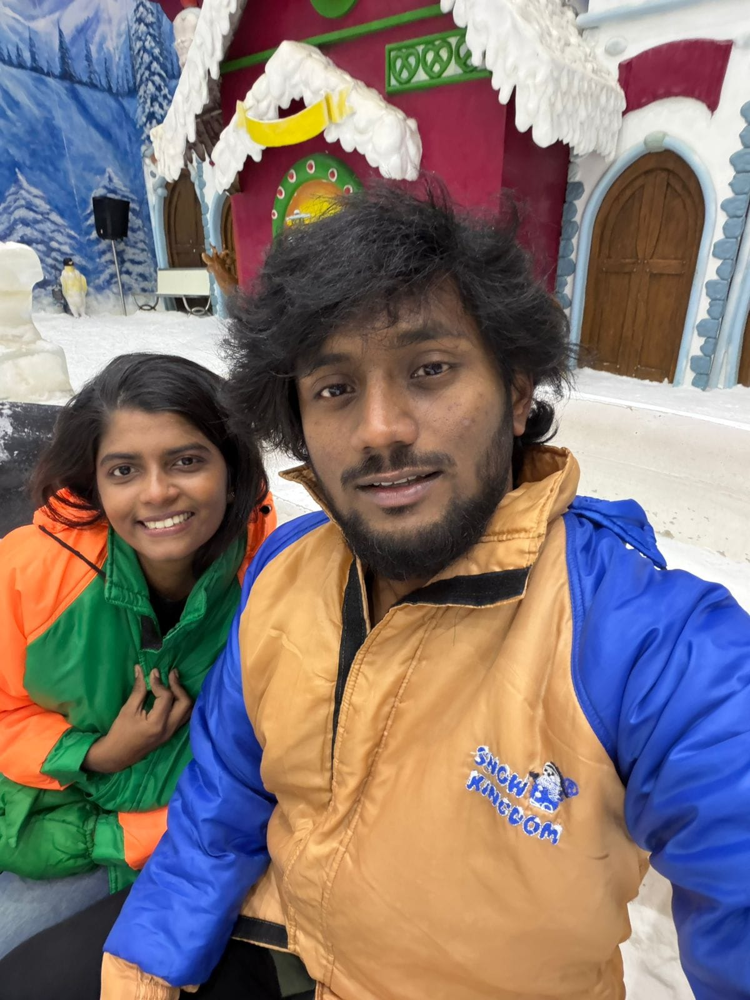
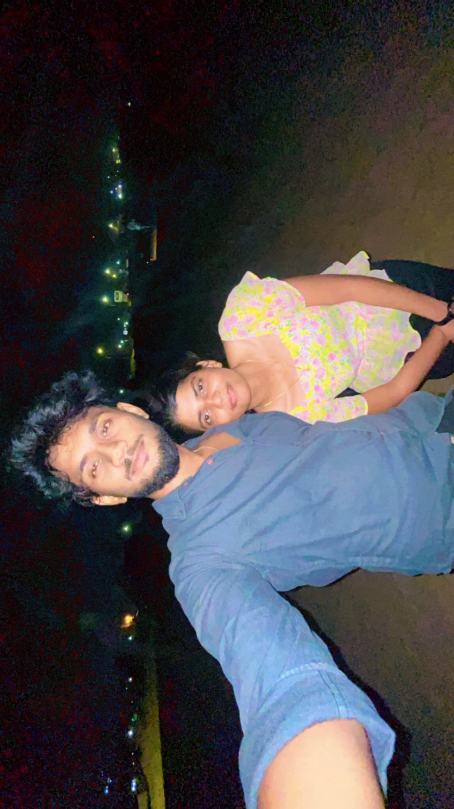
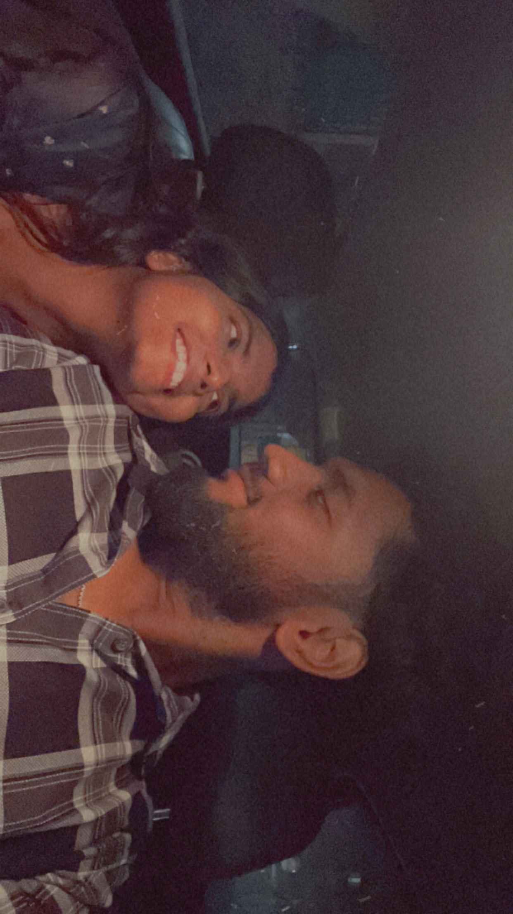
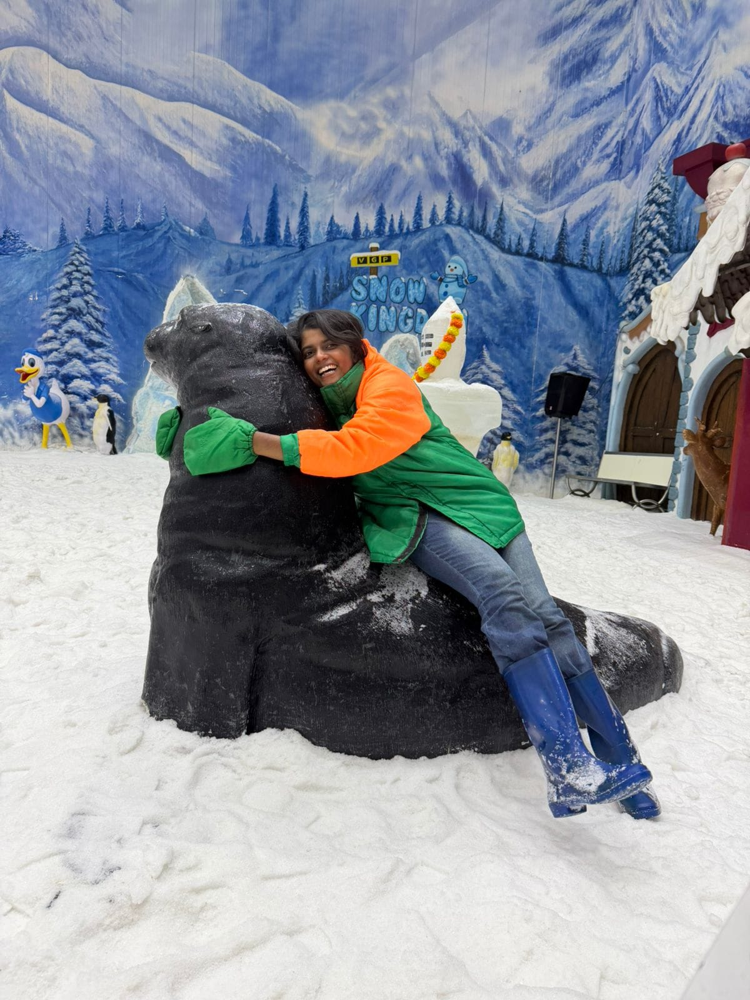
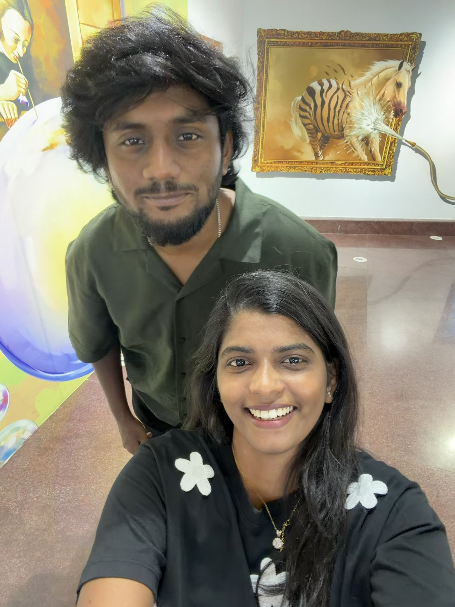
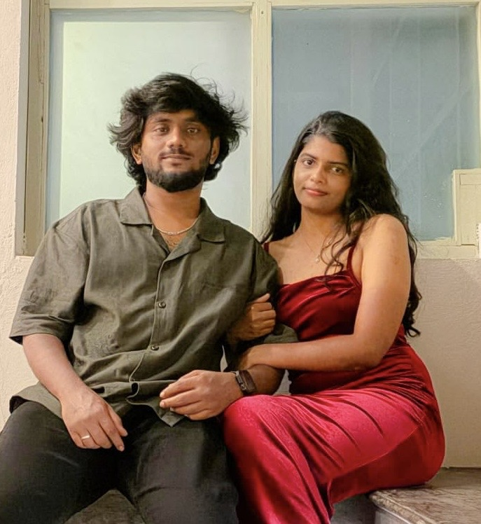

Every moment without you feels incomplete...
I miss you more than words can ever explain.
keyboard_double_arrow_down
I miss you more than words can ever explain.

This day still lives in my heart...

I wish I could relive this moment...

The world was ours that day.

Your laughter is my favorite song.

The way it lights up your entire face before you even say a word. It was the first thing I looked for every single day.

About everything and nothing at all. Time didn't seem to exist when I was listening to your thoughts and sharing mine.

Even when we weren't speaking, just knowing you were there was enough. The silence felt full, never empty.

My Dearest KM ,
I found myself writing this because some feelings are too heavy to carry alone. No matter where life takes us, my heart has chosen you—and it chooses you every single day.
I've nexer thought to make you feel bad or cry deep from my heart and I'll never. I want to and I'll make sure to keep you veryyy happyyyyyyy. Every sunset I see, every small victory and every quiet defeat... I want to share them all with you. You aren't just a part of my life; you are the soul of it.
Always yours,
Forever Me, NK

And I truly believe… one day, not too long we’ll hold our hands together married, pass though every corner of the world together.
We’ll build a life together. We’ll get married.